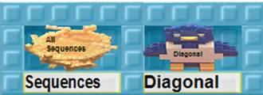
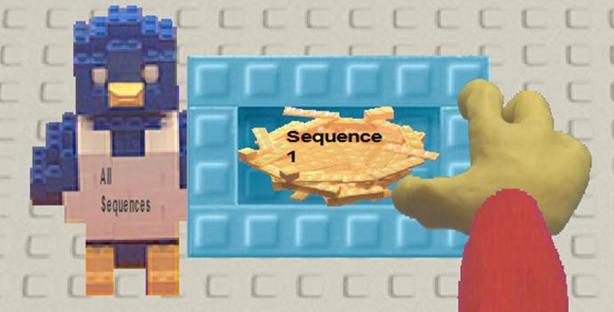

Activity 8:
Counting Sequences
CHALLENGE
Can we make a sequence of all sequences?
Load the Diagonal team into ToonTalk. The team should be given a box like

The nest in the Sequences hole will receive a sequence of sequences in boxes. Give the bird a box containing a nest for the first sequence.

The bird for the Sequence 1 nest should be given the terms of an infinite sequence by the robot of your choice. Then give the All Sequences bird another box with a nest that is the output of another robot (or the same robot with a different box). Repeat this a few times.
Connect the output of the Diagonal sequence to the Add 1 robot.
Suppose that all the sequences coming into Diagonal were digits (numbers between 0 and 9). And suppose the output of Diagonal went to a team of robots that when they received a digit and sent out a different digit. (For example, if the incoming digit was 5 they gave the bird a 4. Otherwise they gave the bird a 5.)
Would these changes alter the answers you gave in Task B?
Suppose you had a robot that took a sequence of digits and produced the decimal number between 0 and 1 with the same digits. For example, if the sequence was 0, 1, 4, 2, 8, 5, 7, 1, 4, 2, 8, 5, 7 … then it would produce .0142857142857… or 1/70.
Write a Web Report answering these questions:
1. Is the sequence of all sequences countable?
2. Is the sequence of all sequences of digits countable?
3. Is the sequence of numbers between 0 and 1 corresponding to sequences of digits countable?
4. If the sequence of numbers between 0 and 1 are not countable does that mean there are more numbers between 0 and 1 than rational numbers between 0 and 1?
5. Extra credit. Are there numbers between 0 and 1 that cannot be described with a finite number of words?
Read the other Web Reports that answer these questions. If you find reports that give answers different from your report, then add comments to their report.